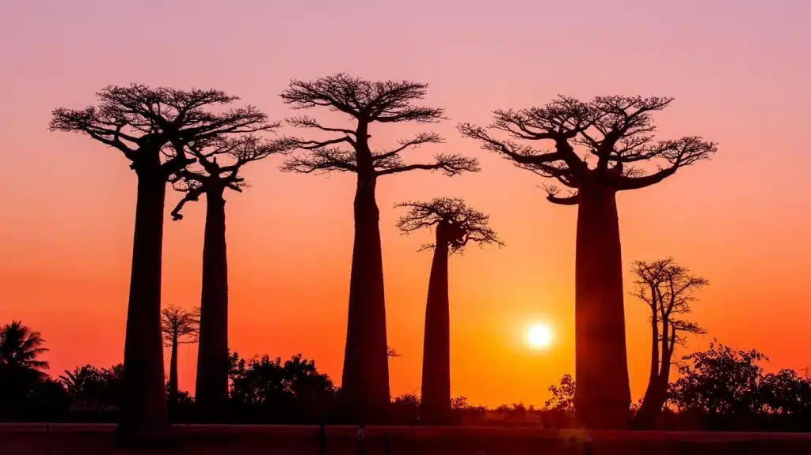

About Me
My name is Liva and I am from Madagascar. I am currently studying in BYU Idaho as an online sttdent. I live with a big and wonderful family and work as an English Teacher. I love to discover new places and to hang out with friends.
I also love to study even sometimes I feel so overwhelemed. I like to work hard and I am happy when I make a good job.
Toamasina, Madagascar
Madagascar is a remarkable country known for its unique biodiversity, with about 90% of its wildlife found nowhere else in the world, including lemurs and baobab trees. Its natural beauty ranges from lush rainforests and coral reefs to stunning beaches and rock formations. Culturally, Madagascar is rich and diverse, blending African, Asian, and European influences. The country is also a major producer of vanilla, cloves, and gemstones. With its peaceful society and abundant natural resources, Madagascar stands out as a country full of beauty, culture, and potential.